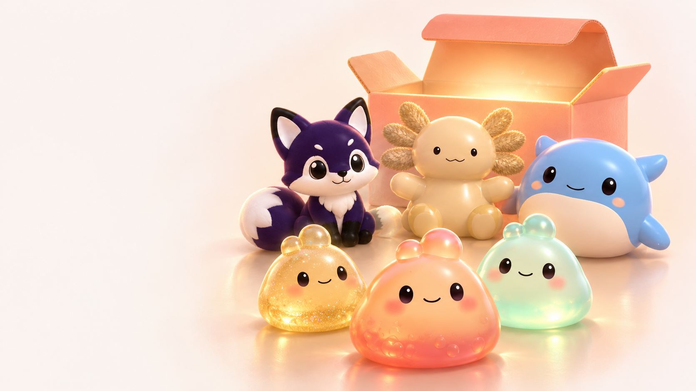
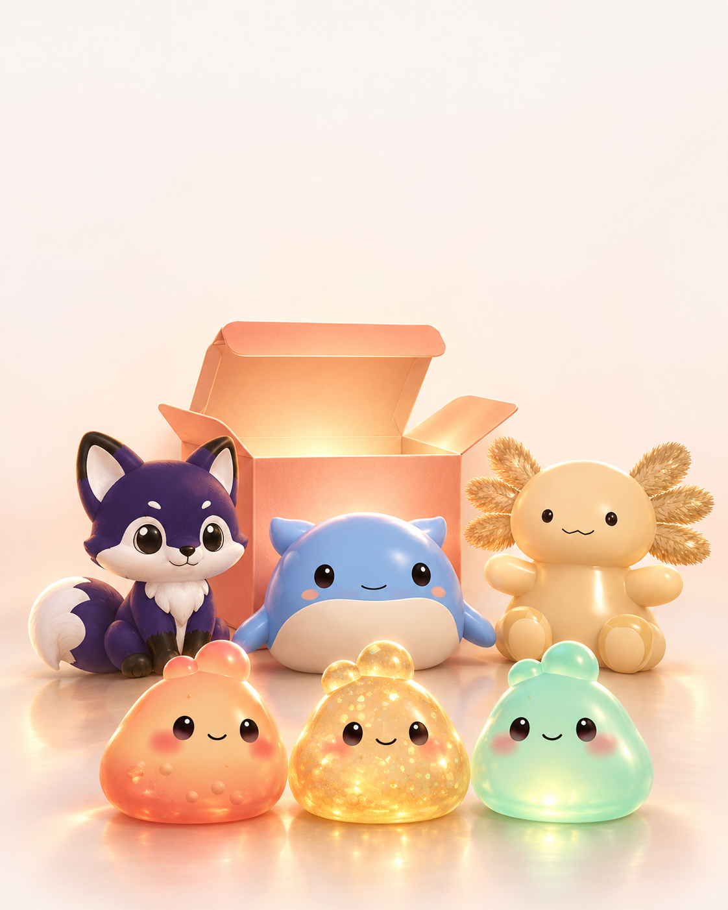

Latest requested revisions · review04 →
Open the complete art set · review 03 →
Website illustration direction · 02
Generated artwork using approved toy captures for identity and the Pip collection cover for style. Desktop and mobile are separate compositions. These are first-pass direction studies, not final website exports.

H1 · Desktop direction
H1 · Independently composed mobile directionPrompts, references and review notes · Archived Unity composition references